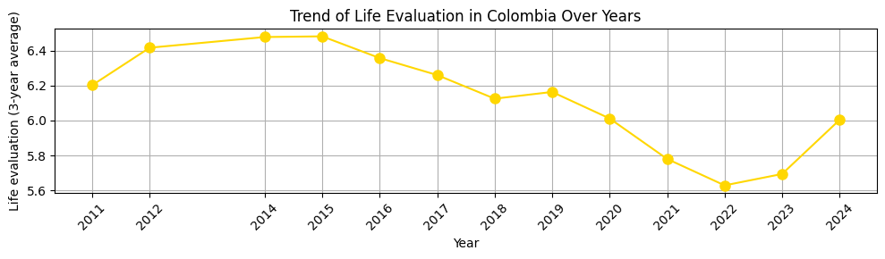
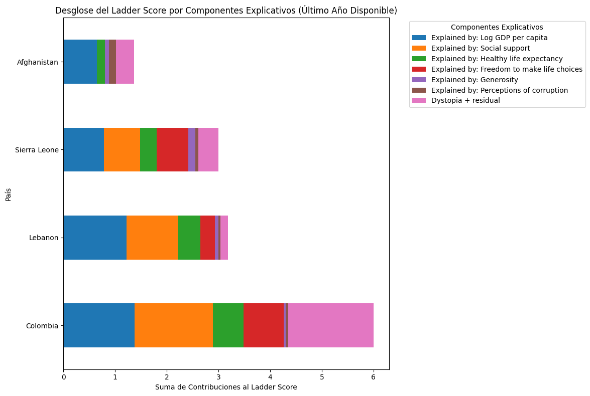
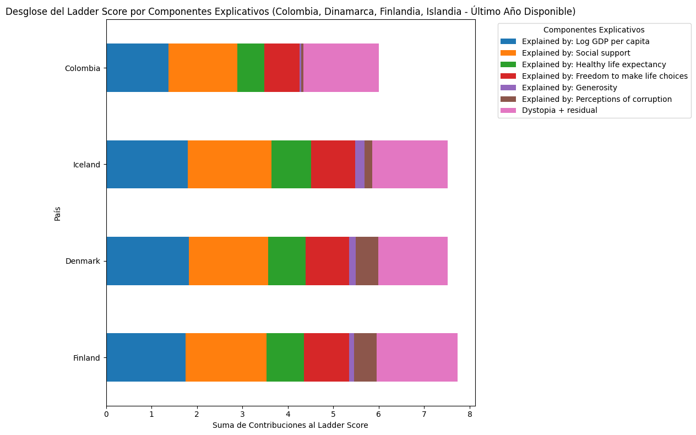
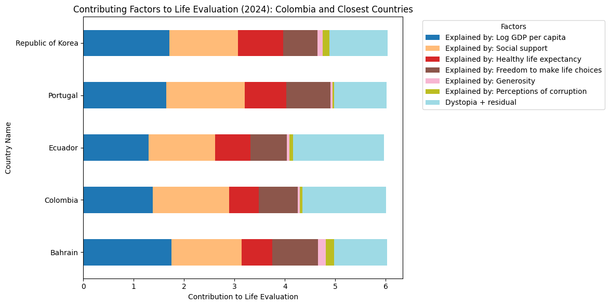
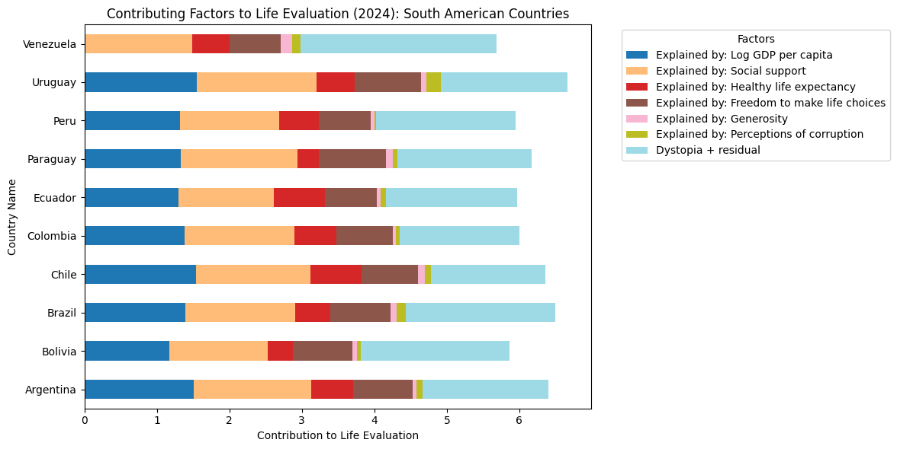

Análisis basado en el World Happiness Report 2025
El bienestar subjetivo constituye un indicador esencial del desarrollo humano. El World Happiness Report evalúa la felicidad de los países mediante el Ladder Score, una medida basada en la percepción que las personas tienen sobre su calidad de vida. Este índice integra factores económicos, sociales, institucionales y culturales.
El presente informe analiza la situación de Colombia a partir de los datos oficiales del informe 2025 y de visualizaciones generadas mediante herramientas de análisis de datos. El objetivo es identificar los factores que explican su nivel de felicidad y compararlo con distintos grupos de países.
Las imágenes ilustran contextos sociales contrastantes entre países con distintos niveles de bienestar, mostrando diferencias en estabilidad, cohesión social, seguridad y calidad de vida.
Refleja el nivel de ingreso promedio.
Mide redes de ayuda familiar y comunitaria.
Indica condiciones de salud y vida.
Evalúa la autonomía personal.
Representa conductas solidarias.
Mide confianza institucional.
Factores no capturados por otras variables.

Colombia muestra fluctuaciones moderadas asociadas a cambios económicos y sociales.

Colombia supera a países con crisis humanitarias o conflictos armados.

Los países más felices poseen economías sólidas y alta confianza social.

El ingreso explica parte del bienestar, pero no es el único factor.

Colombia se ubica en una posición intermedia dentro de la región.
La felicidad en Colombia depende de la interacción entre desarrollo económico, calidad institucional y cohesión social. Aunque no se encuentra entre los países más felices, mantiene niveles moderados gracias a su estabilidad relativa y a la fortaleza de sus redes sociales.